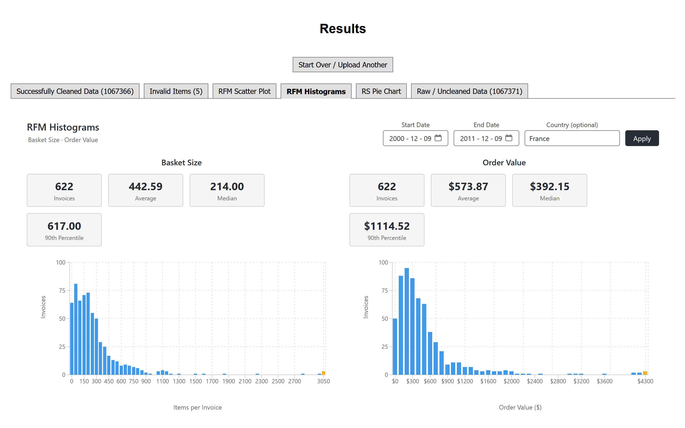
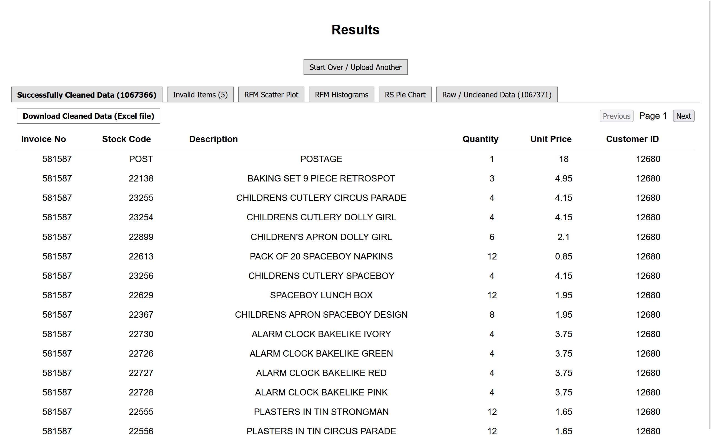
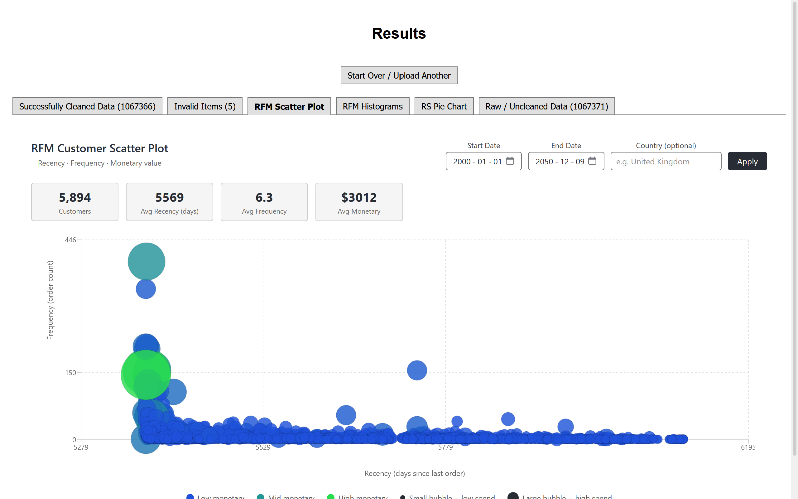
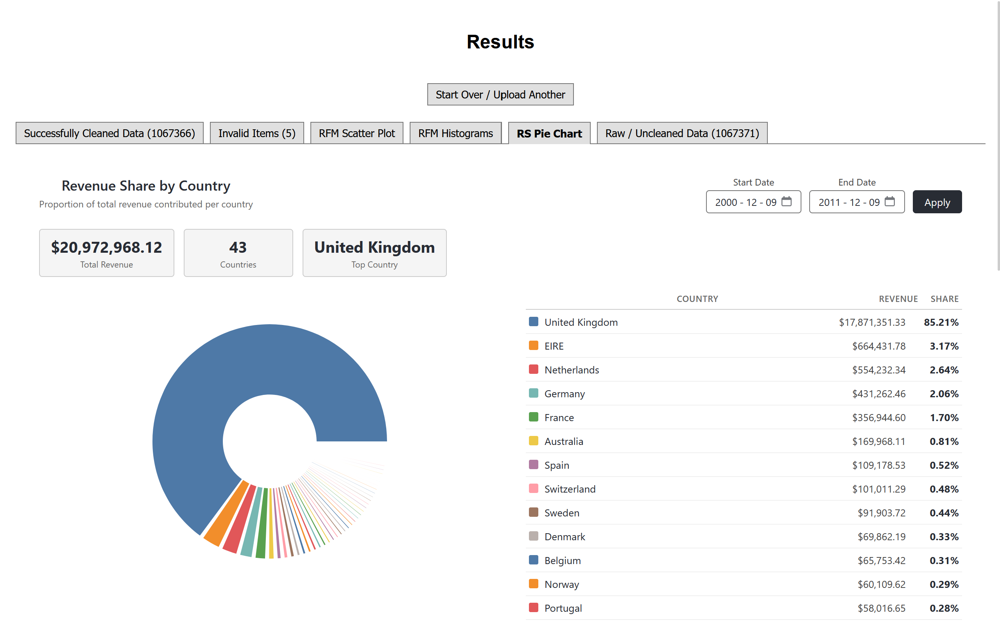

Full-stack analytics platform
E-Commerce Basket & RFM Analytics Platform
A Dockerized platform where users upload CSV or XLSX files, clean million-row retail datasets in the background, review invalid records, export trusted data, and explore customer, basket, and revenue trends.
Team project: seven-person software engineering team
{kind=link}

Application walkthrough
Inside the platform
-
A cleaning-job request starts asynchronous work while the frontend polls processed rows, completion percentage, and estimated time remaining.
An example million-row cleaning job reporting live progress. -
Raw data is cleaned or routed to manual review. Results are paginated, and Apache POI exports cleaned rows to Excel.

Cleaned records, invalid items, raw data, and Excel export. -
RFM analysis combines recency, frequency, and monetary value with spend-based bubble sizing, monetary groups, and date and country filters.

Customer behavior across recency, frequency, and monetary value. -
Country analytics show total revenue, country count, top country, exact revenue, and percentage share for a selected date range.

Revenue totals and proportional contribution by country.
{kind=link}
{kind=link}
{kind=link}
{kind=link}
Project details
Behind the application
Architecture
React and TypeScript connect to a Spring Boot REST API backed by MariaDB. Docker Compose defines the environment, and Flyway versions the schema.
Engineering workflow
Scrum, weekly standups, GitLab issues, merge requests and code review, wiki documentation, CI linting, unit tests, and mock-database or integration-style testing.